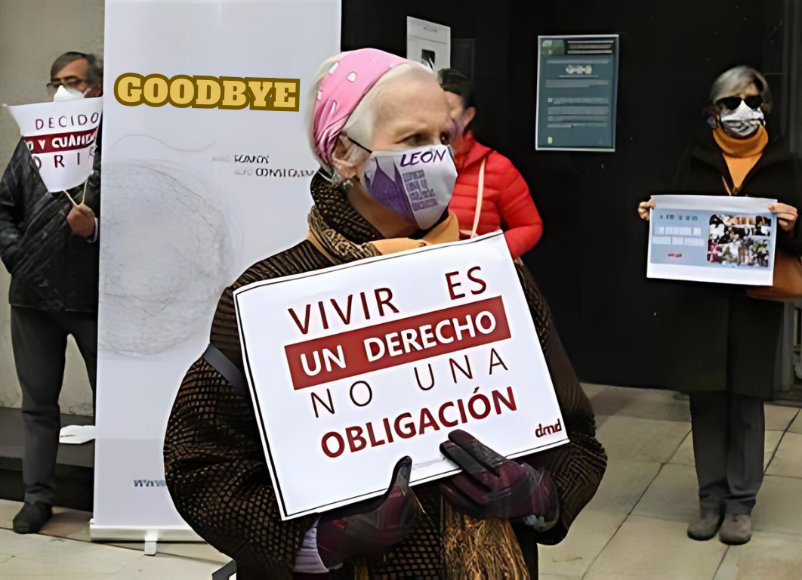

Esta página no es apta para celulares.
| SERVICIOS | ||
|---|---|---|
| ASESORAMIENTO JURÍDICO |
QUIERO DECIR ADIÓS |
ASESORAMIENTO EN TRATAMIENTOS |
|  |  |
|
|
Responsables con la salud y bienestar de nuestros usuarios, toda la documentación antes y después de cualquier proceso será revisada y gestionada para usted. Contamos con un Buffet experto en el antes y el después de cada decisión, usted y su familia siempre estarán tranquilos. |
Cuando la medicina falla, la compasión prevalece. Los procesos de Eutanasia pueden ser llevados a cabo en su hogar, nuestras instalaciones o un lugar privado de preferencia que cuente con las medidas necesarias para el procedimiento. Usted puede estar acompañado por amigos o familiares en todo el transcurso de los procesos. Nuestras instalaciones cuentan con un ambiente sonorizado y proyectores para generar un ambiente visual de su agrado donde podrá proyectar cualquier deseo de partida. |
Médicos expertos en continuar cualquier tratamiento y buscar la solución más mena y los procesos rigurosos para tomar la decisión correcta. Siempre que usted quiera continuar nosotros vamos apoyar esa decisión, nuestro equipo no descansará hasta dar con todo lo que la medicina tenga para usted. |